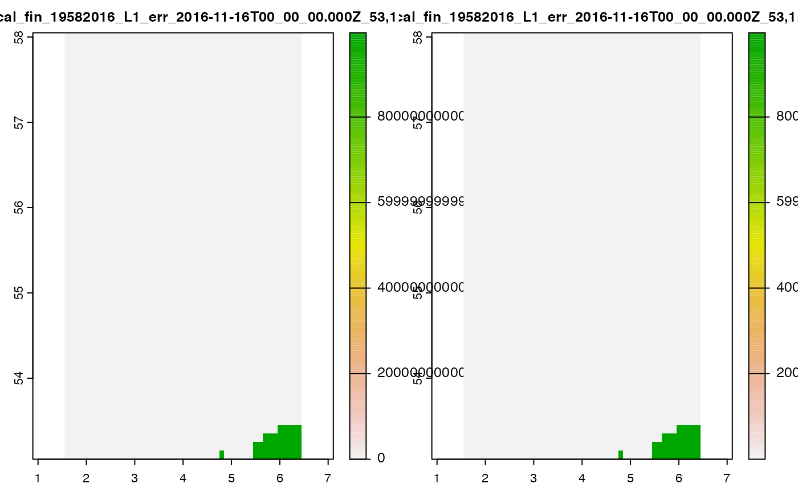
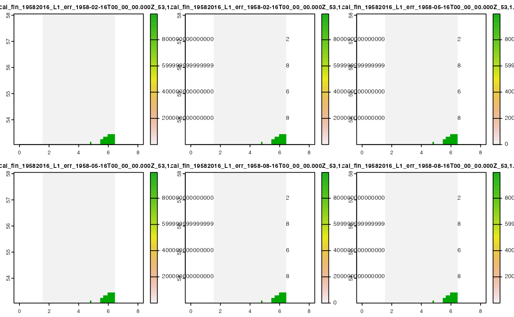
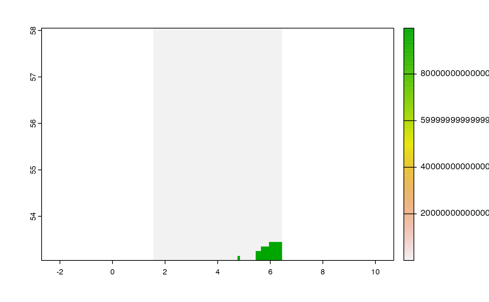

EMODnetWCS provides functionalitly for downloading coverage data from EMODnet WCS services as terra <spatRaster> class objects. It also allows subsetting along coverage dimensions as well as requesting specific bands for download.
For more details on extracting metadata to inform valid subsetting of coverages, please refer to the Getting metadata about Services & Coverages article in the EMODnetWCS online documentation.
The first step to downloading coverages is to initiate a connection with on of the EMODnet WCS servers.
library(EMODnetWCS)
#> Loading required package: ows4R
#> Loading required package: geometa
#> Loading ISO 19139 XML schemas...
#> Loading ISO 19115 codelists...
#> Loading IANA mime types...
#> IANA website not reachable, skipping IANA mime types loading...
#> Loading required package: keyring
wcs <- emdn_init_wcs_client(service = "biology")
#> ✔ WCS client created succesfully
#> ℹ Service: <https://geo.vliz.be/geoserver/Emodnetbio/wcs>
#> ℹ Service: "2.0.1"You can get a list of available coverages from the service with emdn_get_coverage_ids()
coverage_ids <- emdn_get_coverage_ids(wcs)
coverage_ids
#> [1] "Emodnetbio__ratio_large_to_small_19582016_L1_err"
#> [2] "Emodnetbio__aca_spp_19582016_L1"
#> [3] "Emodnetbio__cal_fin_19582016_L1_err"
#> [4] "Emodnetbio__cal_hel_19582016_L1_err"
#> [5] "Emodnetbio__met_luc_19582016_L1_err"
#> [6] "Emodnetbio__oit_spp_19582016_L1_err"
#> [7] "Emodnetbio__tem_lon_19582016_L1_err"
#> [8] "Emodnetbio__chli_19582016_L1_err"
#> [9] "Emodnetbio__tot_lar_19582016_L1_err"
#> [10] "Emodnetbio__tot_sma_19582016_L1_err"Let’s focus on the Calanus finmarchicus
coverage_id <- coverage_ids[3]
coverage_id
#> [1] "Emodnetbio__cal_fin_19582016_L1_err"Subset using a bounding box
While downloading full coverages for most services will work, it may take a long time depending on the size of the coverage so it’s often a good idea to focus on areas of interest and use bounding boxes to subset requests.
Warning!
While most coverages can be downloaded in full, the coverages from the "bathymetry" service in particular are 100GB in size and full download will not be permitted by the server so spatial subsetting must be used with the services. Otherwise the request will return a curl error (most likely curl: (92) HTTP/2 stream 0 was not closed cleanly: INTERNAL_ERROR (err 2)). Note that, in the near future, it will be possible to download larger boxes than what the WCS can currently handle, but this will still be capped at 2 GB.
If you need to download the full EMODnet Digital Bathymetry (DTM), you will have to download it tile by tile from https://portal.emodnet-bathymetry.eu/
So let’s also create a subsetting bbox of an area of interest, the southern North Sea.
We can first check the bounding box of the full coverage to ensure the subset bounding box lies within.
cov_summary <- emdn_get_coverage_summaries(
wcs,
coverage_id
)[[1]]
emdn_get_bbox(cov_summary)
#> Loading required package: sf
#> Linking to GEOS 3.10.2, GDAL 3.4.2, PROJ 8.2.1; sf_use_s2() is TRUE
#> xmin ymin xmax ymax
#> -75.05 34.95 20.05 75.05We can then create a bounding ensuring it lies within the coverage’s bounding box.
bbox <- c(xmin = 1.5,
ymin = 53,
xmax = 6.5,
ymax = 58)Now we are ready to download the coverage and provide the bounding box we created to the bbox argument.
cov_1 <- emdn_get_coverage(wcs,
coverage_id = coverage_id,
bbox = bbox)
#> ── Downloading coverage "Emodnetbio__cal_fin_19582016_L1_err" ──────────────────
#> <GMLEnvelope>
#> ....|-- lowerCorner: 53 1.5 "1958-02-16T00:00:00"
#> ....|-- upperCorner: 58 6.5 "2016-11-16T00:00:00"
#>
#> ✔ Coverage "Emodnetbio__cal_fin_19582016_L1_err" downloaded succesfully as a
#> terra <SpatRaster>
cov_1
#> class : SpatRaster
#> dimensions : 50, 49, 2 (nrow, ncol, nlyr)
#> resolution : 0.1, 0.1 (x, y)
#> extent : 1.55, 6.45, 53.05, 58.05 (xmin, xmax, ymin, ymax)
#> coord. ref. : lon/lat WGS 84 (EPSG:4326)
#> source : Emodnetbio__cal_fin_19582016_L1_err_2016-11-16T00_00_00.000Z_53,1.5,58,6.5.tif
#> names : Emodnetbio__cal~53,1.5,58,6.5_1, Emodnetbio__cal~53,1.5,58,6.5_2
terra::plot(cov_1)
#> Warning in .get_breaks(Z, length(out$cols), "eqint", out$range): probable
#> complete loss of accuracy in modulus
#> Warning in .get_breaks(Z, length(out$cols), "eqint", out$range): probable
#> complete loss of accuracy in modulus
Subset using a bounding box and specific timepoints
If a coverage has additional dimensions to the two geographic ones (x/long & y/lat) then the last point on that dimension is always returned if none are specified through the request.
Coverage Emodnetbio__cal_fin_19582016_L1_err indeed has a temporal extent:
emdn_get_dimension_types(cov_summary)
#> [1] "geographic" "geographic" "temporal"so our previous request returned only the last timepoint of the coverage:
However we can request specific timepoints. First, let’s get a list of all available timepoints.
temp_coefs <- emdn_get_coverage_dim_coefs(
wcs = wcs,
coverage_ids = coverage_id,
type = "temporal")Next, let’s select the first 3 available timepoints.
timepoints <- head(temp_coefs[[1]], 3)
timepoints
#> [1] "1958-02-16T00:00:00.000Z" "1958-05-16T00:00:00.000Z"
#> [3] "1958-08-16T00:00:00.000Z"We can request the specific timepoints by supplying our vector of timepoints to the time argument.
cov_2 <- emdn_get_coverage(wcs,
coverage_id = coverage_id,
bbox = bbox,
time = timepoints)
#> ── Downloading coverage "Emodnetbio__cal_fin_19582016_L1_err" ──────────────────
#> <GMLEnvelope>
#> ....|-- lowerCorner: 53 1.5 "1958-02-16T00:00:00"
#> ....|-- upperCorner: 58 6.5 "2016-11-16T00:00:00"<GMLEnvelope>
#> ....|-- lowerCorner: 53 1.5 "1958-02-16T00:00:00"
#> ....|-- upperCorner: 58 6.5 "2016-11-16T00:00:00"<GMLEnvelope>
#> ....|-- lowerCorner: 53 1.5 "1958-02-16T00:00:00"
#> ....|-- upperCorner: 58 6.5 "2016-11-16T00:00:00"
#>
#> ✔ Coverage "Emodnetbio__cal_fin_19582016_L1_err" downloaded succesfully as a
#> terra <SpatRaster> Stack
cov_2
#> class : SpatRaster
#> dimensions : 50, 49, 6 (nrow, ncol, nlyr)
#> resolution : 0.1, 0.1 (x, y)
#> extent : 1.55, 6.45, 53.05, 58.05 (xmin, xmax, ymin, ymax)
#> coord. ref. : lon/lat WGS 84 (EPSG:4326)
#> sources : Emodnetbio__cal_fin_19582016_L1_err_1958-02-16T00_00_00.000Z_53,1.5,58,6.5.tif (2 layers)
#> Emodnetbio__cal_fin_19582016_L1_err_1958-05-16T00_00_00.000Z_53,1.5,58,6.5.tif (2 layers)
#> Emodnetbio__cal_fin_19582016_L1_err_1958-08-16T00_00_00.000Z_53,1.5,58,6.5.tif (2 layers)
#> names : Emodn~6.5_1, Emodn~6.5_2, Emodn~6.5_1, Emodn~6.5_2, Emodn~6.5_1, Emodn~6.5_2Note that this returns a <SpatRaster> Stack instead of a single <SpatRaster>.
terra::plot(cov_2)
#> Warning in .get_breaks(Z, length(out$cols), "eqint", out$range): probable
#> complete loss of accuracy in modulus
#> Warning in .get_breaks(Z, length(out$cols), "eqint", out$range): probable
#> complete loss of accuracy in modulus
#> Warning in .get_breaks(Z, length(out$cols), "eqint", out$range): probable
#> complete loss of accuracy in modulus
#> Warning in .get_breaks(Z, length(out$cols), "eqint", out$range): probable
#> complete loss of accuracy in modulus
#> Warning in .get_breaks(Z, length(out$cols), "eqint", out$range): probable
#> complete loss of accuracy in modulus
#> Warning in .get_breaks(Z, length(out$cols), "eqint", out$range): probable
#> complete loss of accuracy in modulus
A similar approach is used for specifying points in the vertical dimension, using argument elevation where appropriate.
Subset a specific band
We can also request specific bands from a coverage.
First let’s check the available bands in our coverage.
emdn_get_band_descriptions(cov_summary)
#> [1] "Relative abundance" "Relative error"
#> attr(,"uom")
#> [1] "W.m-2.Sr-1" "W.m-2.Sr-1"To download a specifc band we use the argument rangesubset:
emdn_get_coverage(wcs,
coverage_id = coverage_id,
bbox = bbox,
rangesubset = "Relative error") |>
terra::plot()
#> ── Downloading coverage "Emodnetbio__cal_fin_19582016_L1_err" ──────────────────
#> <GMLEnvelope>
#> ....|-- lowerCorner: 53 1.5 "1958-02-16T00:00:00"
#> ....|-- upperCorner: 58 6.5 "2016-11-16T00:00:00"
#>
#> ✔ Coverage "Emodnetbio__cal_fin_19582016_L1_err" downloaded succesfully as a
#> terra <SpatRaster>
#> Warning in .get_breaks(Z, length(out$cols), "eqint", out$range): probable
#> complete loss of accuracy in modulus
Specify an output filename
When downloading data, underlying package ows4R uses the in-built WCSCoverageFilenameHandler() function for generating appropriate filenames from the parameters supplied to the request.
However, it is possible to override this as well as the location the file is written to by supplying a file path to argument filename.
emdn_get_coverage(wcs,
coverage_id = coverage_id,
bbox = bbox,
rangesubset = "Relative error",
filename = "cal-fin_rel-error.tif")
#> ── Downloading coverage "Emodnetbio__cal_fin_19582016_L1_err" ──────────────────
#> <GMLEnvelope>
#> ....|-- lowerCorner: 53 1.5 "1958-02-16T00:00:00"
#> ....|-- upperCorner: 58 6.5 "2016-11-16T00:00:00"
#>
#> ✔ Coverage "Emodnetbio__cal_fin_19582016_L1_err" downloaded succesfully as a
#> terra <SpatRaster>
#> class : SpatRaster
#> dimensions : 50, 49, 1 (nrow, ncol, nlyr)
#> resolution : 0.1, 0.1 (x, y)
#> extent : 1.55, 6.45, 53.05, 58.05 (xmin, xmax, ymin, ymax)
#> coord. ref. : lon/lat WGS 84 (EPSG:4326)
#> source : cal-fin_rel-error.tif
#> name : cal-fin_rel-error